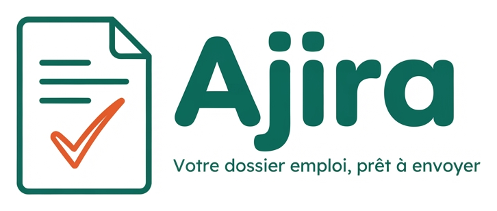

Conditions d'utilisation
Dernière mise à jour : 19 novembre 2026
Le service
Ajira permet de créer un CV et une lettre de motivation, d'ajouter une signature et des pièces, de suivre ses candidatures et de télécharger son dossier.
Compte
Vous devez fournir des informations exactes et protéger votre mot de passe. Vous êtes responsable de l'activité de votre compte.
Gratuit et Premium
La création d'un CV, d'une lettre et leur téléchargement en PDF sont gratuits. Pendant les 30 premiers jours, toutes les fonctions sont accessibles. Ensuite, certaines fonctions (dossier complet, signature électronique, import d'un ancien CV, export Word) nécessitent un abonnement Premium, activé après paiement par Mobile Money ou paiement en ligne, ou avec une clé d'accès. Le prix est affiché dans l'application avant tout paiement.
Votre contenu
Vos documents restent les vôtres. Vous nous autorisez seulement à les stocker et à les afficher pour vous fournir le service. Vous ne devez pas y mettre de contenu illégal, ni les données d'autres personnes sans leur accord (par exemple, les personnes de référence doivent être d'accord).
Utilisation interdite
Il est interdit de tenter d'accéder aux comptes d'autres utilisateurs, de contourner les limites du service ou de l'utiliser de façon abusive.
Responsabilité
Ajira est fourni « en l'état » : nous faisons de notre mieux pour qu'il fonctionne, mais nous ne garantissons ni l'absence d'interruption ni l'obtention d'un emploi. Conservez une copie de vos documents importants.
Fin du compte
Vous pouvez demander la suppression de votre compte à tout moment. Nous pouvons suspendre un compte en cas d'abus.
Modifications et contact
Ces conditions peuvent évoluer ; la version en vigueur est celle de cette page.
Contact : patientkom@gmail.com · Ajira est un service de Nkokwe Digital Solutions.